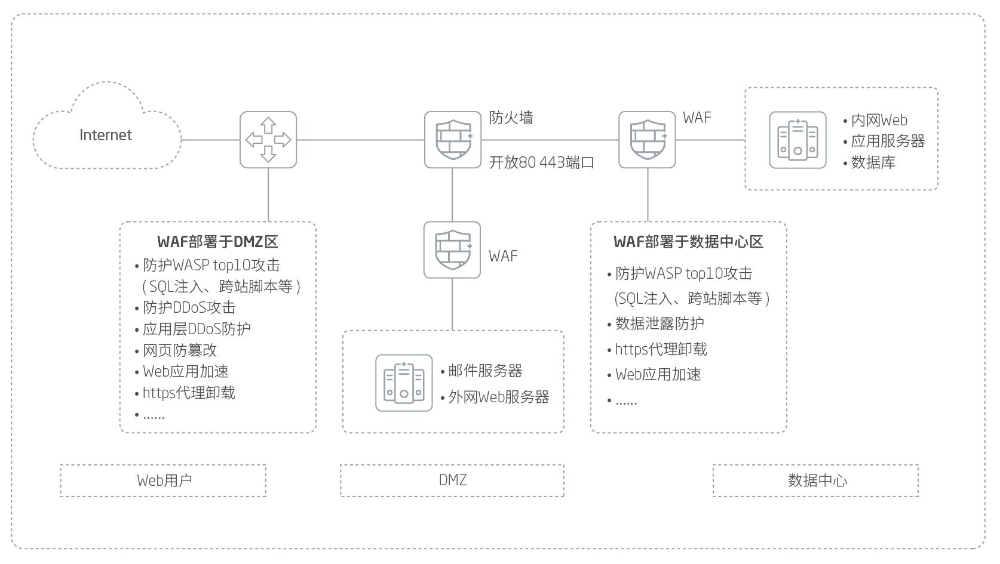

产品概述
当Web应用越来越为丰富的同时，Web服务器以其强大的计算能力、处理性能及蕴含的较高价值逐渐成为主要攻击目标。而在防火墙、IPS/UTM市场规模逐渐增长的同时，Web安全事件却反而呈现增多的趋势，SQL注入、网页篡改、网页挂马等频繁发生。究其原因，是防火墙、IPS/UTM在防护机制或检测深度方面无法满足日益复杂的Web安全防护需求。赛博特安以多年的Web安全研究经验和成果为核心， 针对Web应用的安全问题开发出了赛博特安 Web应用防护系统， 从防护机制和防护深度方面解决了传统安全防护网关对Web应用防护效果不佳的问题，使得Web应用的安全性有了质的提高。
应用价值
赛博特安 Web应用防护系统针对安全事件发生时序进行安全建模， 分别针对安全漏洞、 攻击手段及最终攻击结果进行扫描、防护及诊断，提供综合Web应用安全解决方案，帮助客户实现Web攻击有效防护，服务器防篡改。
产品亮点
安全性
端到端的安全防护体系，采用业内领先加密技术，提供多种身份认证方式，保证用户身份安全、终端/数据安全、传输安全、应用权限安全和审计安全。
完整的网页防篡改方案
除具备普通WAF的防篡改功能之外,更具备独有的专业级主机防篡改方案。基于文件夹驱动级保护技术，采用事件触发机制，确保系统资源不被浪费。同时防篡改软件可以与WAF联动，阻断Web威胁。采用文件级驱动保护技术后，用户每次访问每个受保护网页时，Web服务器在发送之前都进行完整性检查，保证网页的真实性。软件兼容Windows2000/xp/2003/2008(64位)，Linux/BSD等多种操作系统。
全面的立体防护
提供Web漏洞扫描等事前告警功能，提醒客户为Web服务器进行升级，做好充分的安全防护；上线后，提供全方位的Web攻击防护、网页挂马防护、网页篡改防护等功能，同时提供抗DDOS攻击功能，确保网站的正常运转；提供一系列的Web页面加速、负载均衡等功能，提高Web服务器的性能；特有的网页防篡改软件和WAF配合，可以为Web务器安全又添加一层保障。在原有的IPS镜像检测基础上，实现了回注阻断攻击的请求。真正的规避开了单点故障问题，完美的保证了Web系统的正常运行。
安全情报中心
内置威胁情报管理中心，同国际主流数据源、国内情报源进行对接，获取威胁情报。通过情报中心，可以基于实时更新的问题IP、黑链进行动态防护，并通过多样化的图表进行数据展示。更加准确的进行防护与溯源。
应用场景
